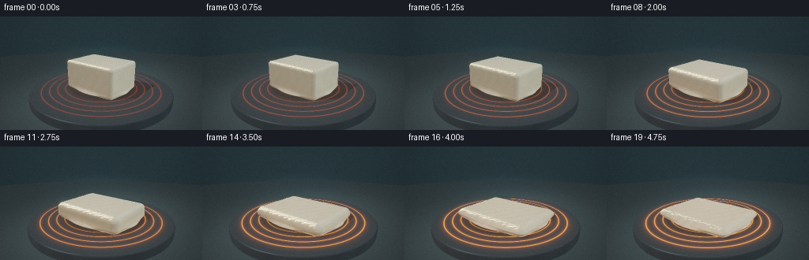
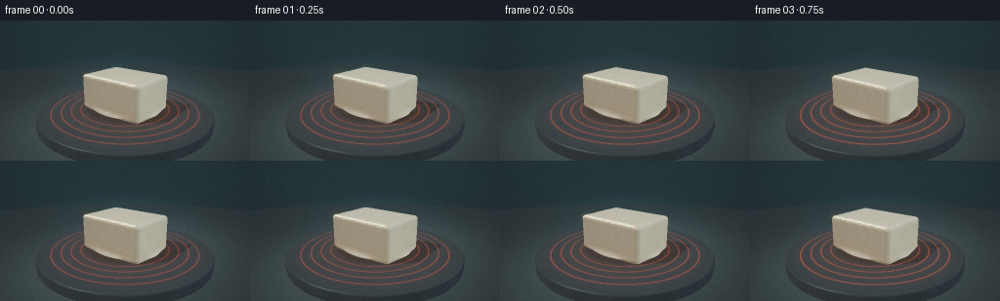

CODING AGENTS AS PIXEL WORLD MODELS
traex/DeepSeek-V4.1-Flash · phygen_100
点击播放 · 原生 RGB 像素
逐轮保存的候选
回放视频、检查图与代码变化。
每份候选均可单独播放。实际图片检查记录在下方工具轨迹中。
候选 01播放与检查图
点击播放 · 原生 RGB 像素


展开代码变化
--- 上一保存版本
+++ 本次保存版本
@@ -0,0 +1,363 @@
+from __future__ import annotations
+
+import math
+from pathlib import Path
+
+import cv2
+import numpy as np
+
+import artifact_io
+
+
+ROOT = Path(__file__).resolve().parent
+WIDTH = 256
+HEIGHT = 144
+FRAMES = 20
+FPS = 4.0
+SS = 2
+
+
+def smoothstep(a: float, b: float, x: np.ndarray | float):
+ t = np.clip((x - a) / (b - a), 0.0, 1.0)
+ return t * t * (3.0 - 2.0 * t)
+
+
+def norm(v: np.ndarray) -> np.ndarray:
+ return np.sqrt(np.maximum(np.sum(v * v, axis=-1), 1e-12))
+
+
+def normalize(v: np.ndarray) -> np.ndarray:
+ return v / norm(v)[..., None]
+
+
+def mix(a, b, t):
+ return a * (1.0 - t) + b * t
+
+
+def rounded_box_sdf(p: np.ndarray, half: tuple[float, float, float], radius: float):
+ q = np.abs(p) - np.asarray(half, dtype=np.float32) + radius
+ outside = norm(np.maximum(q, 0.0))
+ inside = np.minimum(np.max(q, axis=-1), 0.0)
+ return outside + inside - radius
+
+
+def ellipsoid_sdf(p: np.ndarray, center, radii):
+ q = (p - np.asarray(center, dtype=np.float32)) / np.asarray(radii, dtype=np.float32)
+ k0 = norm(q)
+ k1 = norm(q / np.asarray(radii, dtype=np.float32))
+ return k0 * (k0 - 1.0) / np.maximum(k1, 1e-6)
+
+
+def smin(a, b, k):
+ h = np.clip(0.5 + 0.5 * (b - a) / k, 0.0, 1.0)
+ return mix(b, a, h) - k * h * (1.0 - h)
+
+
+def wax_sdf(p: np.ndarray, p_melt: float, heat: float):
+ # The solid slab collapses while a broad, shallow pool spreads beneath it.
+ half_h = 0.555 - 0.405 * p_melt
+ half_x = 1.055 + 0.485 * p_melt
+ half_z = 0.785 + 0.390 * p_melt
+ radius = 0.105 + 0.145 * p_melt
+ center = np.array([0.0, half_h, 0.0], dtype=np.float32)
+ slab = rounded_box_sdf(p - center, (half_x, half_h, half_z), radius)
+
+ pool = ellipsoid_sdf(
+ p,
+ (0.0, 0.066 + 0.012 * p_melt, 0.0),
+ (1.155 + 0.505 * p_melt, 0.082 + 0.030 * p_melt, 0.930 + 0.400 * p_melt),
+ )
+ body = smin(slab, pool, 0.105 + 0.075 * p_melt)
+
+ # A few low lobes make the final pool feel like it flowed rather than scaled.
+ lobe_amount = smoothstep(0.42, 0.95, p_melt)
+ if lobe_amount > 0.0:
+ lobes = (
+ ((0.94, 0.045, 0.44), (0.43, 0.075, 0.31), 0.35),
+ ((-0.72, 0.038, -0.58), (0.51, 0.064, 0.35), 0.60),
+ ((0.16, 0.034, -0.88), (0.58, 0.060, 0.30), 0.82),
+ )
+ for center_lobe, radii, phase in lobes:
+ pulse = 0.92 + 0.08 * math.sin(phase * 7.0 + p_melt * 3.0)
+ scaled = tuple(r * pulse for r in radii)
+ lobe = ellipsoid_sdf(p, center_lobe, scaled)
+ body = smin(body, lobe, 0.13 * lobe_amount)
+
+ # Gentle thermal wobble on the exposed upper surface.
+ wobble = 0.0018 * heat * np.sin(18.0 * p[..., 0] + 11.0 * p[..., 2] + 3.0)
+ return body + wobble
+
+
+def plate_sdf(p: np.ndarray):
+ # Dark ceramic hot plate: a very shallow rounded cylinder, top surface at y=0.
+ radial = np.sqrt(p[..., 0] ** 2 + p[..., 2] ** 2) - 2.62
+ vertical = np.abs(p[..., 1] + 0.125) - 0.125
+ qx = radial
+ qy = vertical
+ outside = np.sqrt(np.maximum(qx, 0.0) ** 2 + np.maximum(qy, 0.0) ** 2)
+ inside = np.minimum(np.maximum(qx, qy), 0.0)
+ return outside + inside - 0.045
+
+
+def table_sdf(p: np.ndarray):
+ return p[..., 1] + 0.245
+
+
+def scene_sdf(p: np.ndarray, p_melt: float, heat: float):
+ wax = wax_sdf(p, p_melt, heat)
+ plate = plate_sdf(p)
+ table = table_sdf(p)
+ return np.minimum(np.minimum(wax, plate), table)
+
+
+def make_camera(frame_index: int):
+ t = frame_index / (FRAMES - 1)
+ cam = np.array([4.15 - 0.20 * t, 2.70 - 0.06 * t, 5.15 - 0.12 * t], dtype=np.float32)
+ target = np.array([0.0, 0.58 - 0.035 * t, 0.0], dtype=np.float32)
+ forward = normalize(target - cam)
+ right = normalize(np.cross(forward, np.array([0.0, 1.0, 0.0], dtype=np.float32)))
+ up = np.cross(right, forward)
+ return cam, forward, right, up
+
+
+def camera_rays(width: int, height: int, frame_index: int):
+ cam, forward, right, up = make_camera(frame_index)
+ ys, xs = np.mgrid[0:height, 0:width].astype(np.float32)
+ u = (xs + 0.5) / width * 2.0 - 1.0
+ v = 1.0 - (ys + 0.5) / height * 2.0
+ tan_half = math.tan(math.radians(35.0) * 0.5)
+ aspect = width / height
+ direction = (
+ forward[None, None, :]
+ + right[None, None, :] * (u[..., None] * tan_half * aspect)
+ + up[None, None, :] * (v[..., None] * tan_half)
+ )
+ return cam, normalize(direction)
+
+
+def trace(origin, directions, p_melt, heat):
+ pos = origin[None, None, :] + directions * 0.015
+ travel = np.full(directions.shape[:2], 0.015, dtype=np.float32)
+ hit = np.zeros(directions.shape[:2], dtype=bool)
+ epsilon = np.float32(0.0016)
+ for _ in range(96):
+ d = scene_sdf(pos, p_melt, heat)
+ new_hit = (~hit) & (d < epsilon)
+ hit |= new_hit
+ active = ~hit
+ step = np.clip(d, 0.0015, 0.20)
+ pos = pos + directions * (step * active)[..., None]
+ travel = travel + step * active
+ if not np.any(active):
+ break
+ return pos, travel, hit
+
+
+def surface_normal(pos, p_melt, heat):
+ e = np.float32(0.0022)
+ dx = np.array([e, 0.0, 0.0], dtype=np.float32)
+ dy = np.array([0.0, e, 0.0], dtype=np.float32)
+ dz = np.array([0.0, 0.0, e], dtype=np.float32)
+ n = np.stack(
+ [
+ scene_sdf(pos + dx, p_melt, heat) - scene_sdf(pos - dx, p_melt, heat),
+ scene_sdf(pos + dy, p_melt, heat) - scene_sdf(pos - dy, p_melt, heat),
+ scene_sdf(pos + dz, p_melt, heat) - scene_sdf(pos - dz, p_melt, heat),
+ ],
+ axis=-1,
+ )
+ return normalize(n)
+
+
+def shadow_factor(pos, normal, p_melt, heat, light_dir):
+ ray = normalize(light_dir)
+ start = pos + normal * 0.004 + ray * 0.008
+ shadow = np.zeros(pos.shape[:2], dtype=np.float32)
+ alive = np.ones(pos.shape[:2], dtype=bool)
+ for _ in range(24):
+ d = wax_sdf(start, p_melt, heat)
+ shadow = np.maximum(shadow, (d < 0.012).astype(np.float32) * alive)
+ step = np.clip(d, 0.018, 0.24)
+ start = start + ray[None, None, :] * step[..., None]
+ alive &= start[..., 1] < 2.0
+ return 1.0 - 0.72 * shadow
+
+
+def background_color(direction, x_screen, y_screen):
+ top = np.array([0.022, 0.060, 0.072], dtype=np.float32)
+ bottom = np.array([0.008, 0.012, 0.016], dtype=np.float32)
+ h = np.clip(direction[..., 1] * 0.72 + 0.45, 0.0, 1.0)[..., None]
+ color = mix(bottom, top, h)
+ halo = np.exp(-((x_screen * 1.28) ** 2 + ((y_screen - 0.04) * 2.05) ** 2) * 3.2)
+ color = color + np.array([0.030, 0.092, 0.098], dtype=np.float32) * halo[..., None]
+ warm = np.exp(-(((x_screen + 0.05) * 3.0) ** 2 + ((y_screen + 0.48) * 2.7) ** 2))
+ color = color + np.array([0.055, 0.023, 0.008], dtype=np.float32) * warm[..., None]
+ return color
+
+
+def shade_surface(pos, normal, direction, distance, p_melt, heat):
+ height, width = distance.shape
+ ys, xs = np.mgrid[0:height, 0:width].astype(np.float32)
+ x_screen = (xs + 0.5) / width * 2.0 - 1.0
+ y_screen = 1.0 - (ys + 0.5) / height * 2.0
+ bg = background_color(direction, x_screen, y_screen)
+
+ wax_d = wax_sdf(pos, p_melt, heat)
+ plate_d = plate_sdf(pos)
+ table_d = table_sdf(pos)
+ is_wax = (np.abs(wax_d) < np.abs(plate_d) - 1e-4) & (np.abs(wax_d) < np.abs(table_d) - 1e-4)
+ is_plate = (~is_wax) & (np.abs(plate_d) < np.abs(table_d) - 1e-4)
+ is_table = ~(is_wax | is_plate)
+
+ key_dir = normalize(np.array([-0.56, 1.0, 0.64], dtype=np.float32))
+ fill_dir = normalize(np.array([0.92, 0.36, -0.20], dtype=np.float32))
+ back_dir = normalize(np.array([0.18, 0.42, -1.0], dtype=np.float32))
+ view = -direction
+
+ diffuse_key = np.maximum(np.sum(normal * key_dir[None, None, :], axis=-1), 0.0)
+ diffuse_fill = np.maximum(np.sum(normal * fill_dir[None, None, :], axis=-1), 0.0)
+ back_light = np.maximum(np.sum(normal * back_dir[None, None, :], axis=-1), 0.0)
+
+ shadow = shadow_factor(pos, normal, p_melt, heat, key_dir)
+ ao = np.ones((height, width), dtype=np.float32)
+ for radius, weight in ((0.025, 0.35), (0.060, 0.22), (0.120, 0.14)):
+ ao -= weight * np.clip((radius - wax_sdf(pos + normal * radius, p_melt, heat)) / radius, 0.0, 1.0)
+ ao = np.clip(ao, 0.28, 1.0)
+
+ color = np.zeros((height, width, 3), dtype=np.float32)
+
+ # Warm, slightly translucent wax.
+ top_factor = np.clip(normal[..., 1] * 0.58 + 0.46, 0.0, 1.0)
+ ivory = np.array([0.96, 0.78, 0.49], dtype=np.float32)
+ pale = np.array([1.00, 0.91, 0.69], dtype=np.float32)
+ amber = np.array([0.90, 0.43, 0.12], dtype=np.float32)
+ wax_base = mix(ivory[None, None, :], pale[None, None, :], top_factor[..., None])
+ wax_base = mix(wax_base, amber[None, None, :], (0.09 + 0.17 * heat) * (1.0 - top_factor[..., None]))
+ striation = 0.5 + 0.5 * np.sin(16.0 * pos[..., 0] + 8.0 * pos[..., 2] + 2.0 * np.sin(7.0 * pos[..., 1]))
+ wax_base *= (0.975 + 0.035 * striation[..., None])
+ wax_light = (
+ 0.18 * ao[..., None]
+ + 1.28 * diffuse_key[..., None] * shadow[..., None]
+ + np.array([0.33, 0.43, 0.50], dtype=np.float32)[None, None, :] * diffuse_fill[..., None]
+ + 0.20 * back_light[..., None]
+ )
+ wax_color = wax_base * wax_light
+
+ half_key = normalize(key_dir + view)
+ spec_wax = np.maximum(np.sum(normal * half_key, axis=-1), 0.0) ** (44.0 - 22.0 * p_melt)
+ fresnel = (1.0 - np.maximum(np.sum(normal * view, axis=-1), 0.0)) ** 3.0
+ wax_color += np.array([1.0, 0.82, 0.60], dtype=np.float32)[None, None, :] * (
+ spec_wax * (0.22 + 0.28 * p_melt) * shadow
+ )[..., None]
+ wax_color += np.array([0.95, 0.36, 0.07], dtype=np.float32)[None, None, :] * (
+ (0.045 + 0.18 * heat) * fresnel * (0.35 + 0.65 * p_melt)
+ )[..., None]
+ core_glow = np.exp(-np.maximum(pos[..., 1], 0.0) / (0.34 - 0.10 * p_melt))
+ wax_color += np.array([0.92, 0.31, 0.055], dtype=np.float32)[None, None, :] * (
+ core_glow * (0.055 + 0.20 * heat)
+ )[..., None]
+ color = np.where(is_wax[..., None], wax_color, color)
+
+ # Graphite ceramic plate with concentric heating coils and warm spill.
+ r = np.sqrt(pos[..., 0] ** 2 + pos[..., 2] ** 2)
+ ring_dist = np.full_like(r, 10.0)
+ for ring_radius in (1.38, 1.67, 1.96, 2.25):
+ ring_dist = np.minimum(ring_dist, np.abs(r - ring_radius))
+ coil = 1.0 - smoothstep(0.012, 0.025, ring_dist)
+ coil_halo = np.exp(-ring_dist / 0.075)
+ heat_rgb = mix(
+ np.array([0.70, 0.055, 0.008], dtype=np.float32),
+ np.array([1.00, 0.34, 0.045], dtype=np.float32),
+ heat,
+ )
+ brushed = 0.5 + 0.5 * np.sin(r * 170.0 + 0.7 * np.sin(np.arctan2(pos[..., 2], pos[..., 0]) * 19.0))
+ plate_base = np.array([0.045, 0.060, 0.067], dtype=np.float32)[None, None, :]
+ plate_base = plate_base * (0.78 + 0.22 * brushed[..., None])
+ plate_light = (
+ 0.18 * np.ones_like(ao)[..., None]
+ + 0.86 * diffuse_key[..., None] * shadow[..., None]
+ + np.array([0.28, 0.40, 0.46], dtype=np.float32)[None, None, :] * diffuse_fill[..., None]
+ )
+ plate_color = plate_base * plate_light
+ plate_half = normalize(key_dir + view)
+ plate_spec = np.maximum(np.sum(normal * plate_half, axis=-1), 0.0) ** 92.0
+ plate_color += np.array([0.36, 0.48, 0.52], dtype=np.float32)[None, None, :] * (0.34 * plate_spec * shadow)[..., None]
+ warm_reflection = np.exp(-np.maximum(r - 0.95, 0.0) / 0.46) * (0.16 + 0.20 * p_melt)
+ plate_color += np.array([0.52, 0.20, 0.065], dtype=np.float32)[None, None, :] * warm_reflection[..., None]
+ top_plate = smoothstep(-0.018, -0.004, pos[..., 1])
+ emission = (coil * (0.20 + 1.35 * heat) + coil_halo * (0.018 + 0.16 * heat)) * top_plate
+ plate_color += heat_rgb[None, None, :] * emission[..., None]
+ contact = np.exp(-np.maximum(r - (1.12 + 0.35 * p_melt), 0.0) / 0.27)
+ plate_color *= (1.0 - 0.52 * contact * top_plate)[..., None]
+ color = np.where(is_plate[..., None], plate_color, color)
+
+ # Matte studio table, with a restrained reflection and contact shading.
+ table_color = np.array([0.025, 0.036, 0.040], dtype=np.float32)[None, None, :]
+ table_light = 0.52 + 0.50 * diffuse_key + 0.20 * diffuse_fill
+ table_color = table_color * table_light[..., None]
+ table_glow = np.exp(-((pos[..., 0] * 0.34) ** 2 + ((pos[..., 2] + 0.1) * 0.25) ** 2))
+ table_color += np.array([0.045, 0.070, 0.070], dtype=np.float32)[None, None, :] * table_glow[..., None]
+ table_color = np.where(is_table[..., None], table_color, color)
+ color = table_color
+
+ fog = 1.0 - np.exp(-np.maximum(distance - 5.0, 0.0) * 0.035)
+ color = mix(color, bg, fog[..., None])
+ return color, is_wax
+
+
+def render_frame(frame_index: int):
+ t = frame_index / (FRAMES - 1)
+ melt = 0.025 + 0.975 * smoothstep(0.02, 0.96, t)
+ heat = np.float32(0.08 + 0.92 * smoothstep(0.00, 0.94, t))
+ width, height = WIDTH * SS, HEIGHT * SS
+ origin, directions = camera_rays(width, height, frame_index)
+ pos, distance, hit = trace(origin, directions, float(melt), float(heat))
+ normal = surface_normal(pos, float(melt), float(heat))
+ color, _ = shade_surface(pos, normal, directions, distance, float(melt), float(heat))
+
+ ys, xs = np.mgrid[0:height, 0:width].astype(np.float32)
+ x_screen = (xs + 0.5) / width * 2.0 - 1.0
+ y_screen = 1.0 - (ys + 0.5) / height * 2.0
+ bg = background_color(directions, x_screen, y_screen)
+ color = np.where(hit[..., None], color, bg)
+
+ # Bloom makes the electric coils read as a hot, luminous source.
+ ldr = np.clip(color, 0.0, 4.0)
+ bright = np.maximum(ldr - 0.72, 0.0)
+ bloom_small = cv2.GaussianBlur(bright, (0, 0), 2.0)
+ bloom_large = cv2.GaussianBlur(bright, (0, 0), 7.0)
+ ldr = ldr + 0.38 * bloom_small + 0.18 * bloom_large
+
+ # Soft shoulder, gamma, vignette, and a little temporal-stable grain.
+ mapped = 1.0 - np.exp(-ldr * 1.18)
+ mapped = np.power(np.clip(mapped, 0.0, 1.0), 1.0 / 2.2)
+ vignette = 1.0 - 0.20 * np.clip((x_screen * 0.80) ** 2 + (y_screen * 0.64) ** 2, 0.0, 1.0)
+ mapped *= vignette[..., None]
+ rng = np.random.default_rng(1040 + frame_index)
+ grain = rng.normal(0.0, 0.006, size=(HEIGHT, WIDTH, 1)).astype(np.float32)
+
+ image = cv2.resize(mapped, (WIDTH, HEIGHT), interpolation=cv2.INTER_AREA)
+ image = np.clip(image + grain, 0.0, 1.0)
+ return (image * 255.0 + 0.5).astype(np.uint8)
+
+
+def main():
+ frames = []
+ for index in range(FRAMES):
+ print(f"rendering frame {index + 1:02d}/{FRAMES}", flush=True)
+ frames.append(render_frame(index))
+ frames = np.stack(frames, axis=0)
+
+ artifact_io.save(frames, ROOT)
+
+ fourcc = cv2.VideoWriter_fourcc(*"mp4v")
+ writer = cv2.VideoWriter(str(ROOT / "output.mp4"), fourcc, FPS, (WIDTH, HEIGHT))
+ if not writer.isOpened():
+ raise RuntimeError("Could not open MP4 writer")
+ for frame in frames:
+ writer.write(cv2.cvtColor(frame, cv2.COLOR_RGB2BGR))
+ writer.release()
+
+
+if __name__ == "__main__":
+ main()
可观测工具轨迹
实际执行的命令与返回图片。
命令 1exit 0
/bin/bash -c "sed -n '1,240p' prompt.txt"
命令 2exit 0
/bin/bash -c "sed -n '1,260p' GENERATION_RULES.md"
命令 3exit 0
/bin/bash -c 'cat task_spec.json'
命令 4exit 0
/bin/bash -c "printf '%s\\n' '--- files ---'; rg --files -g '"'!*.mp4'"' -g '"'!*.mov'"' | sed -n '1,200p'; printf '%s\\n' '--- environment ---'; command -v ffmpeg; command -v python3; python3 - <<'PY'
try:
import numpy, PIL, cv2
print('numpy', numpy.__version__)
print('PIL', PIL.__version__)
print('cv2', cv2.__version__)
except Exception as e: print('imports:', repr(e))
PY"命令 5exit 0
/bin/bash -c "sed -n '1,260p' artifact_io.py"
命令 6exit 0
/bin/bash -c "sed -n '1,260p' player_template.html"
命令 7exit 0
/bin/bash -c "ls -la; find . -maxdepth 2 -type f -printf '%p %s bytes\\n' | sort"
命令 8exit 0
/bin/bash -c "python3 - <<'PY'
for m in ['scipy','skimage','imageio','matplotlib']:
try:
x=__import__(m); print(m, getattr(x,'__version__','ok'))
except Exception as e: print(m,'missing')
PY
python3 - <<'PY'
import cv2
print('video codecs', [x for x in ['mp4v','avc1','VP80','MJPG']])
PY"命令 9exit 0
/bin/bash -c 'command -v chafa || true; command -v viu || true; command -v jp2 || true; command -v img2txt || true; command -v magick || true; command -v convert || true'
命令 10exit 1
/bin/bash -c 'python3 generate.py'
命令 11exit 0
/bin/bash -c "nl -ba generate.py | sed -n '226,282p'"
命令 12exit 1
/bin/bash -c 'python3 generate.py'
命令 13exit 0
/bin/bash -c "python3 - <<'PY' import numpy as np import generate as g h,w=288,512 o,d=g.camera_rays(w,h,0) p,dist,hit=g.trace(o,d,0.05,0.1) n=g.surface_normal(p,0.05,0.1) key=g.normalize(np.array([-.56,1,.64],dtype=np.float32)) view=-d hk=g.normalize(key+view) print(o.shape,d.shape,p.shape,n.shape,key.shape,view.shape,hk.shape) print((n*hk[None,None,:]).shape,np.sum(n*hk[None,None,:],axis=-1).shape) PY"
命令 14exit 1
/bin/bash -c 'python3 generate.py'
命令 15exit 0
/bin/bash -c "python3 - <<'PY'
import generate as g
f=g.render_frame(0)
print('rendered', f.shape, f.dtype, 'range', f.min(), f.max(), 'mean', f.mean())
from PIL import Image
Image.fromarray(f).save('.tmp/first.png')
PY"命令 16exit 0
/bin/bash -c "python3 - <<'PY'
from PIL import Image
import numpy as np
im=Image.open('.tmp/first.png').convert('RGB').resize((64,36))
a=np.array(im)
# ANSI truecolor half-block view
for y in range(0,36,2):
line=''
for x in range(64):
top=a[y,x]; bot=a[min(y+1,35),x]
line+=f'\\033[38;2;{top[0]};{top[1]};{top[2]}m\\033[48;2;{bot[0]};{bot[1]};{bot[2]}mâ'
print(line+'\\033[0m')
PY"命令 17exit 1
/bin/bash -c "python3 - <<'PY'
from PIL import Image
import numpy as np
chars=' .,:;irsXA253hMHGS#9B&@'
for name in ['.tmp/first.png']:
im=Image.open(name).convert('L').resize((64,30))
a=np.array(im)
print(name)
for row in a:
print(''.join(chars[min(len(chars)-1,int(v)/256*len(chars))] for v in row))
PY"命令 18exit 1
/bin/bash -c "python3 - <<'PY'
from PIL import Image
import numpy as np
chars=' .,:;irsXA253hMHGS#9B&@'
im=Image.open('.tmp/first.png').convert('L').resize((72,32))
a=np.array(im)
for row in a:
print(''.join(chars[min(len(chars)-1,int(v)/256*len(chars))] for v in row))
PY"命令 19exit 0
/bin/bash -c "python3 - <<'PY'
from PIL import Image
import numpy as np
chars=' .,:;irsXA253hMHGS#9B&@'
a=np.array(Image.open('.tmp/first.png').convert('L').resize((72,32))).astype(np.float32)
for row in a:
print(''.join(chars[min(len(chars)-1,int(v/256*len(chars)))] for v in row))
PY"命令 20exit 0
/bin/bash -c 'python3 generate.py'
命令 21exit 0
/bin/bash -c "python3 - <<'PY'
from pathlib import Path
from PIL import Image
import numpy as np, cv2, json
root=Path('.')
frames=sorted((root/'frames').glob('*.png'))
print('frames',len(frames),'size',Image.open(frames[0]).size,'mode',Image.open(frames[0]).mode)
arr=np.stack([np.array(Image.open(p)) for p in frames])
diff=np.abs(arr[1:].astype(np.int16)-arr[:-1].astype(np.int16)).mean((1,2,3))
print('adjacent mean abs diff min/max',float(diff.min()),float(diff.max()))
print('first-to-last diff',float(np.abs(arr[-1].astype(np.int16)-arr[0]).mean()))
print('frame means',np.round(arr.mean((1,2,3)),1).tolist())
cap=cv2.VideoCapture('output.mp4')
print('mp4 opened',cap.isOpened(),'frames',int(cap.get(cv2.CAP_PROP_FRAME_COUNT)),'fps',cap.get(cv2.CAP_PROP_FPS),'size',int(cap.get(cv2.CAP_PROP_FRAME_WIDTH)),int(cap.get(cv2.CAP_PROP_FRAME_HEIGHT)))
print('pixels',np.load('pixels.npz')['pixels'].shape, np.load('pixels.npz')['pixels'].dtype)
print('files',[(p.name,p.stat().st_size) for p in [root/'output.mp4',root/'pixels.npz',root/'index.html',root/'inspection.png']])
PY"命令 22exit 0
/bin/bash -c "python3 - <<'PY'
from PIL import Image
import numpy as np
# Four evenly spaced RGB thumbnails side-by-side, plus grayscale silhouettes.
ims=[Image.open(f'frames/{i:02d}.png').convert('RGB') for i in (0,6,13,19)]
out=Image.new('RGB',(256*2,144*2),(20,24,28))
for j,im in enumerate(ims):
x=(j%2)*256; y=(j//2)*144
out.paste(im,(x,y))
out.save('.tmp/four.png')
chars=' .,:;irsXA253hMHGS#9B&@'
for i in (0,6,13,19):
a=np.array(Image.open(f'frames/{i:02d}.png').convert('L').resize((56,24))).astype(np.float32)
print('\\nFRAME',i)
for row in a:
print(''.join(chars[min(len(chars)-1,int(v/256*len(chars)))] for v in row))
PY"命令 23exit 0
/bin/bash -c "git status --short 2>/dev/null || true; find frames -maxdepth 1 -type f | wc -l; du -sh .; python3 -m py_compile generate.py; echo 'generate.py syntax: ok'"
保存候选 1 份；完成命令 23 次；可验证图片返回 0 张。原始 API 响应与完整日志保留在本地。